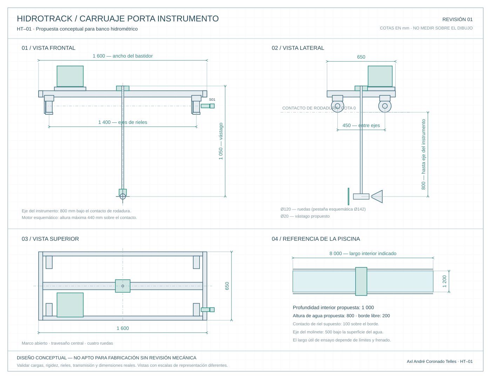

Tu carruaje, en tres dimensiones.
Explora la estructura, mira el montaje y consulta cada medida.
Diseño conceptual · medidas propuestas. Longitud de piscina indicada: 8 m. Ancho, profundidad y dimensiones del carruaje son supuestos de diseño, pendientes de comprobar antes de fabricar.
Carruaje porta instrumento
Conjunto completo · selecciona una pieza para ver su ficha
Cada pieza, con su ficha.
Elige una tarjeta o pulsa una pieza del modelo 3D para identificarla.
No hay fichas que coincidan. Prueba otro nombre o categoría.
Las fichas reúnen función, cantidades y datos disponibles. “Referencia comercial” enlaza al fabricante; “Diseño propuesto” corresponde a una pieza todavía por dimensionar. Las ilustraciones 3D no sustituyen los planos comerciales.
Del modelo al plano.
Frente, lado y planta del carruaje, con una referencia de la piscina.


Medidas para empezar.
Los 8 m corresponden al largo de la piscina. El recorrido útil será menor y dependerá de los topes, límites y espacio de aceleración y frenado.
Dejan 200 mm hasta el borde. Inmersión ilustrada del eje del molinete: 500 mm bajo la superficie.
| Elemento | Medida | Origen |
|---|---|---|
| Largo interior de piscina | 8 000 | Indicado por ti |
| Ancho interior de piscina | 1 200 | Propuesto |
| Profundidad interior | 1 000 | Propuesta |
| Nivel de agua desde el fondo | 800 | Propuesto |
| Bastidor: ancho × largo | 1 600 × 650 | Propuesto |
| Altura sobre contacto de riel* | 440 | Propuesta |
| Eje del molinete bajo contacto de riel* | 800 | Propuesto |
*Se supone el contacto de rodadura 100 mm sobre el borde de la piscina. La cota de 440 mm incluye el conjunto motor esquemático.